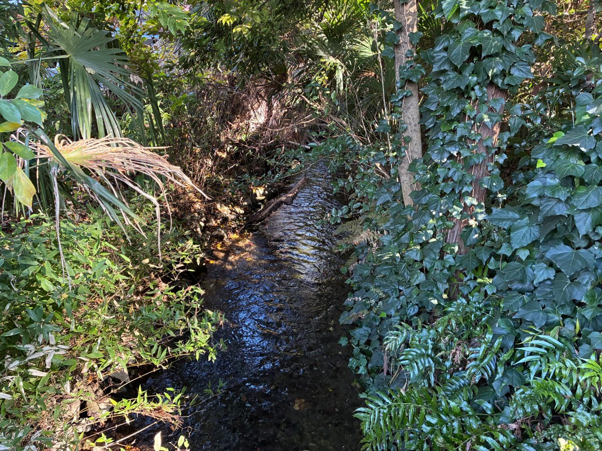
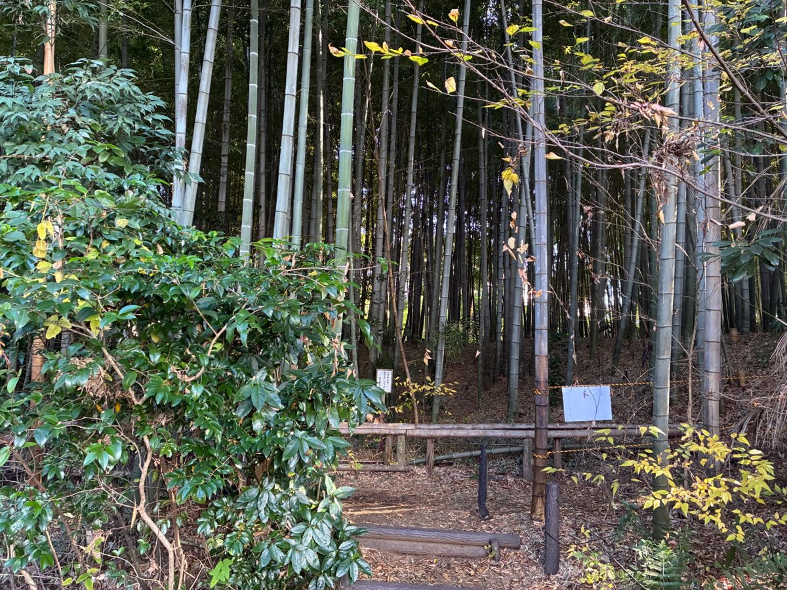
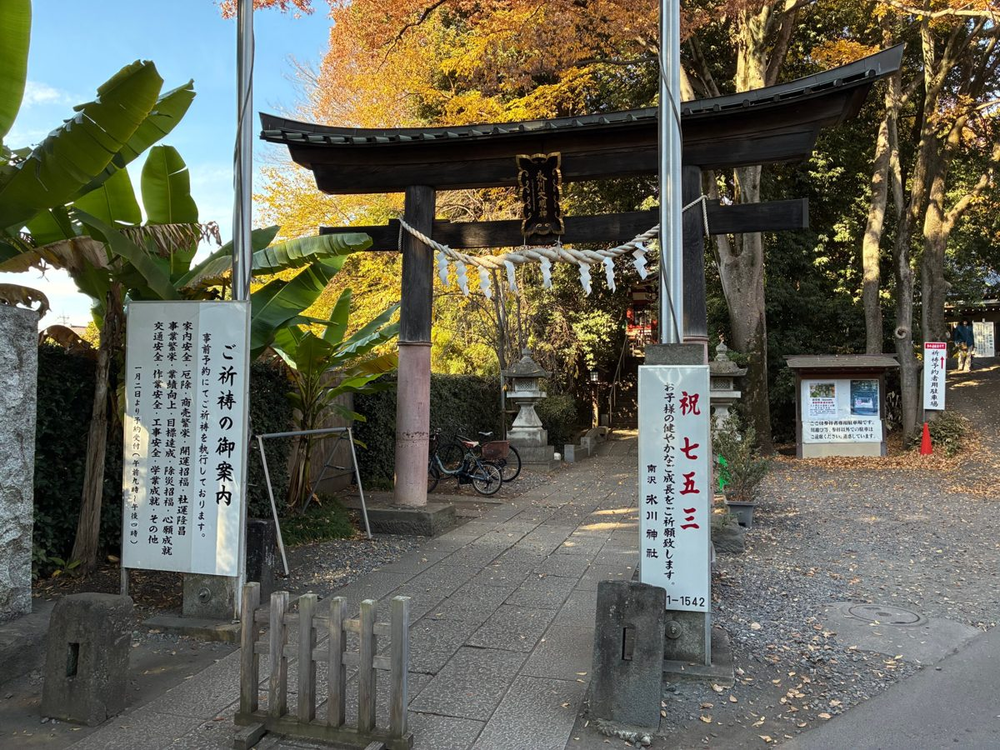
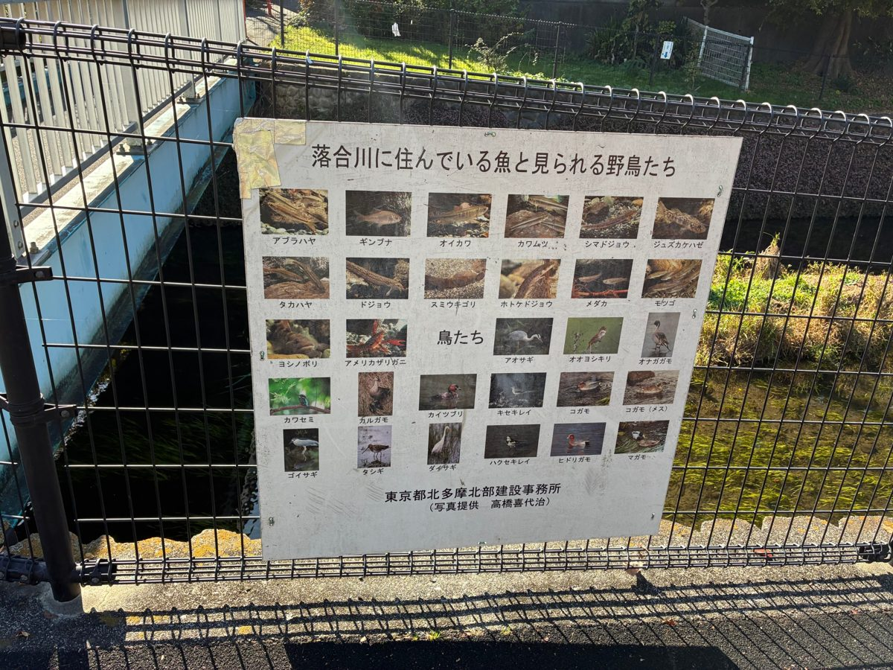

Tokyo Bathhouse Etiquette for First-Timers: What Happens in the Changing Room

A guest from Hungary once told me, before we set off, that he had nothing to worry about. Hungary is a hot-spring country. Budapest has some of the most famous thermal baths in the world. "I'm used to hot springs," he said. "It'll be fine."
Then we walked into the changing room at Spa Japon, and he stopped. In Hungary you bathe in a swimsuit. In a Japanese bathhouse you bathe with nothing on at all. For a moment he simply stood there, holding his bag.
Ten minutes later, he was sitting in the carbonated bath looking completely at home. The confusion did not last, but it was real, and almost every first-timer feels some version of it. So here is what I tell people before we go in.
The rules, in the order you meet them
- Shoes off at the entrance. Put them in a shoe locker and keep the key.
- Baths are separated by gender. Look for the curtains: 男 (men) and 女 (women). They are often in different colours, usually blue for men and red for women, but read the character to be sure.
- No swimsuits. You undress fully in the changing room and leave everything in a locker. Nobody is looking at you. Everyone is there to relax.
- Wash before you get in. Sit on the small stool at a shower station, wash your whole body and rinse off all the soap. The bath water is shared, so this is the one rule people really care about.
- The small towel stays out of the water. Use it to cover yourself as you walk, then fold it on your head or put it on the edge of the bath.
- Tie up long hair so it does not touch the water.
- No swimming, no splashing, quiet voices. No phones or cameras in the bathing area.
- Dry off a little before you go back to the changing room, so the floor stays dry for the next person.
Tattoos and young children
Many Japanese bathhouses do not admit guests with tattoos, and rules differ by facility, so check before you go. Small children are usually allowed in public baths with a parent, but each place has its own age rules for the mixed changing area, so check those too. On my own tour, the bath option is for guests aged 6 and over without tattoos. That is my tour's rule, not the facility's.
What helped my Hungarian guest
He knew hot water. What he did not know was the order of things: where to undress, where to wash, where the towel goes. Once he had done it once, the rest felt natural. That is why I now explain every step on the walk there, while the rules still feel abstract and nobody is undressed yet. By the time we reach the doors, nothing inside is a surprise.
Inside Spa Japon there are several baths to try: a carbonated bath that fizzes against your skin, open-air baths, and an aroma sauna. My advice is to start with the gentler baths, stay in the hottest one only for a few minutes, and drink water between rounds. After the tour, he left a five-star review. But what I remember is the moment he stopped worrying and started enjoying it.
Before the bath: walk to the springs
A bath feels better when you arrive a little tired, and Higashikurume has a walk that is worth doing on its own. It starts about 30 minutes from Ikebukuro on the Seibu Ikebukuro Line, and everything below is within walking distance of Higashi-Kurume Station.

Chikurin Park (bamboo grove). About 10 minutes on foot from the station. Around 2,000 moso bamboo grow on a long, narrow slope, and a thin staircase runs down between them. The park has been a public park since 1974. It is small, but it is a real bamboo grove, not a photo spot with a queue.

Minamisawa. When I walked this route alone to scout it, this was the part I remembered most. The water is very clear. Behind the torii of Minamisawa Hikawa Shrine the trees had turned yellow, and a sign at the entrance announced Shichi-Go-San, the November festival for young children. It is a neighbourhood shrine, close to everyday life. Beside it, a thin stream runs between ferns and ivy, and the only sound is the water. It is a different pleasure from bathing: just looking at water. In 2008 the Ochiai River and the Minamisawa springs were chosen for Japan's "100 Remarkable Waters" list by the Ministry of the Environment, the only site in Tokyo. The springs are said to produce about 10,000 tonnes of water a day.

The Ochiai River. From the bridge the sky opens up, and a lawn and footpath follow the water. The river is shallow and slow, and in summer it is a place where local children play. On the fence there is a sign showing the fish and birds you can see here, and another asking people to keep the river clean.
Getting there and how long to plan
- To Higashikurume: Seibu Ikebukuro Line from Ikebukuro, about 30 minutes.
- The spring walk: about 2 hours at an easy pace, flat apart from the bamboo steps.
- To Spa Japon: a short bus ride from Higashi-Kurume Station. Check the bus times and any shuttle on the facility's official site.
- At the bath: plan at least an hour. Hours, prices and any maintenance closures are on the official site, so check before you go.
- Bring: a small towel and a hair tie. Check on the official site whether towels are included or for rent.
The short version
Shoes off, undress fully, wash first, towel out of the water, keep quiet. That is really all. The first ten minutes may feel strange, as they did for a guest from a hot-spring country. After that, it is one of the most relaxing things you can do in Japan.
If you would rather go with someone who knows the way, I guide this route in small groups of up to 4 guests: the spring-water walk is the main part, and the bath at Spa Japon is an option. Dates on GetYourGuide.
More stories from these walks are in my ebook, Hidden Tokyo: A Local Guide's Notebook ($4.99).
Some links on this page are affiliate links: booking through them supports this site at no extra cost to you.